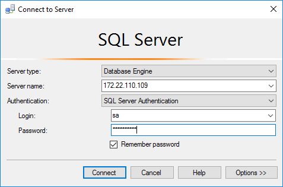
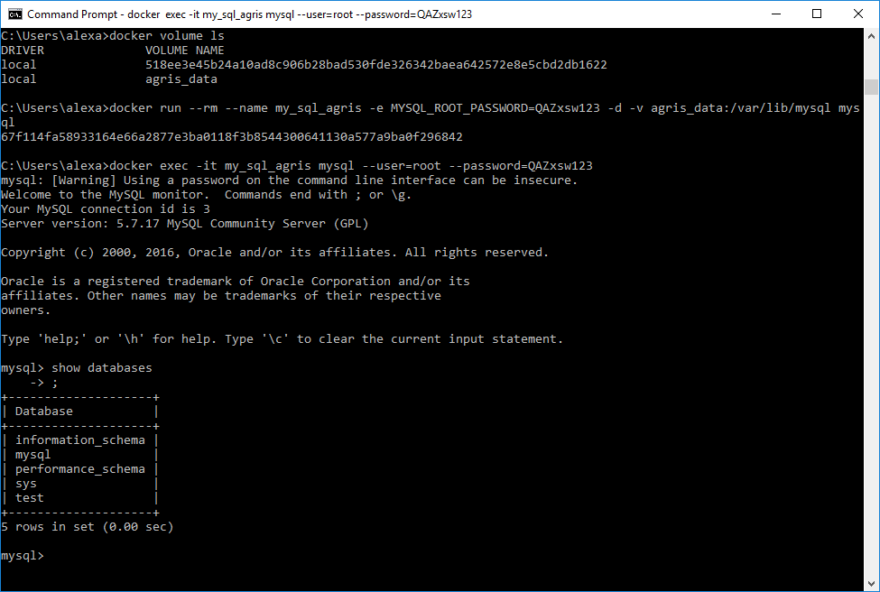
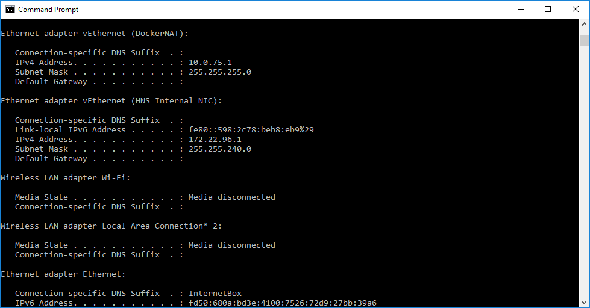
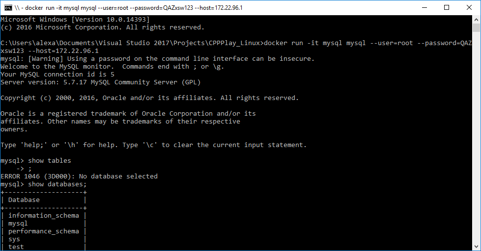
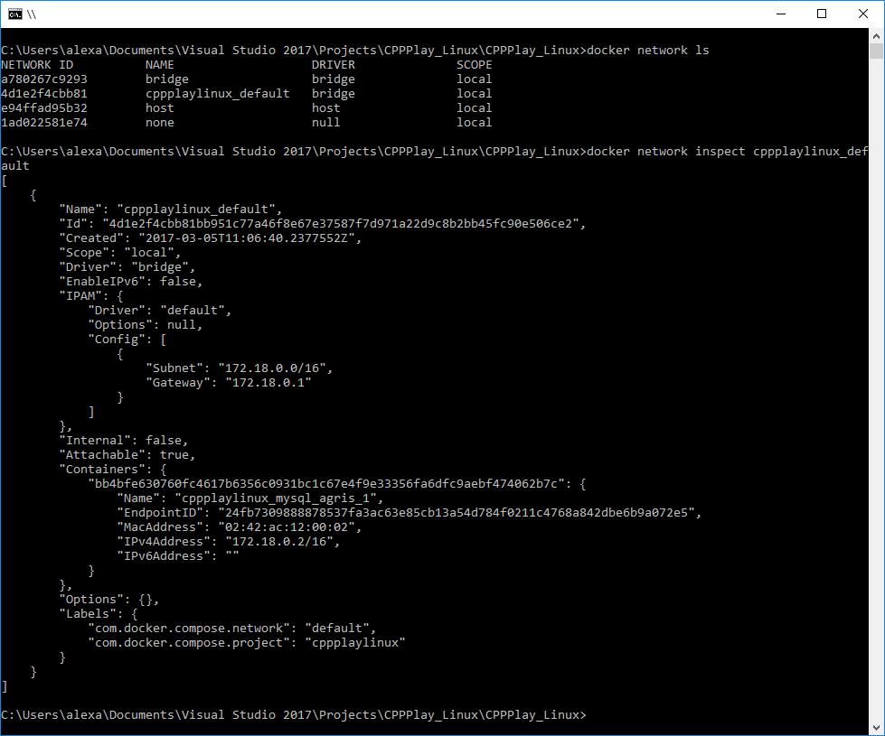
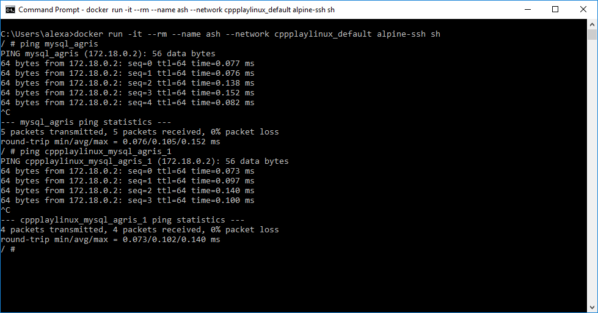

Docker And Containers Part 3
This is the third part of my personal Docker cheatsheet. The content includes: cleaning up the system, running an SQL Server Windows container, connecting to it through the SQL Server Management Studio and using volumes for storing container persistent data (in this post saving mysql databases). The last part will be dedicated to Docker Compose.
Cleaning up the system:
c:>docker system prune
WARNING! This will remove:
- all stopped containers
- all volumes not used by at least one container
- all images without at least one container associated to them
Are you sure you want to continue? [y/N] y
Running SQL Server Express in Docker
c:>docker pull microsoft/mssql-server-windows-express
c:>docker run -d --name SQLServer_AGris
--env sa_password="QAZxsw1234"
--env ACCEPT_EULA=y microsoft/mssql-server-windows-express
Because starting the server can take a long time, it is recommended in another window to do:
c:>docker logs --follow SQLServer_AGris
Other useful flags:
-v c:\temp:c:\temp- to mount a folder in the container-e attach_dbs="[{'dbName':'SampleDb','dbFiles':['C:\\temp\\sampledb.mdf','C:\\temp\\sampledb_log. ldf']}]"- to attach an existing database
Then get the IP Address (I have installed the Unix tools in Windows):
c:>docker inspect SQLServer_AGris | grep IPAddress | awk "/[0-9]/ { print $2 }" | sed "s/\",*//g"
And connect using the SQL Server Management Studio:

Play with volumes - persistent data between containers start / stop / remove
-v my_home:/home/agris
will create a persistent volume called my_home which will be mounted in /home/agris in the container. Everytime a container is started with -v my_home:... the same volume will be mounted.
c:>docker volumes ls
will display both the named volumes and the unnamed ones.
For Dockerfile, there is the VOLUMEcommand which creates such a volume for persistent data across container restarts and destruction and is also a hit for us for where the container stores important data.
For example, in the mysql Dockerfile we find VOLUME /var/lib/mysql. Example with mysql:
Start myslq with volume mounted:
c:>docker run --rm --name my_sql_agris -p 3306:3306 -e MYSQL_ROOT_PASSWORD=QAZxsw123 -d -v agris_data:/var/lib/mysql mysql
Check logs to see that everything is fine:
c:>docker logs my_sql_agris
List the volumes:
c:>docker volume ls
Start the mysql client to create a database:
c:>docker exec -it my_sql_agris mysql --user=root --password=QAZxsw123
Stop the server container:
c:>docker stop my_sql_agris
Run again the server and the mysql client to verify the database still exists. In this case it was called "test".

Docker Compose
First thing, some cleanup:
docker ps -a -q | xargs docker rm -f
docker-compose.yml general structure:
version: '3'
services:
mysql_agris:
image: mysql
ports:
- 3306:3306
environment:
- MYSQL_ROOT_PASSWORD=QAZxsw123
volumes:
- agris_data:/var/lib/mysql
volumes:
agris_data:
external: true
Run
c:>docker-compose up
Connect to the instance:
c:>docker run -it mysql mysql --user=root --password=QAZxsw123 --host=172.22.96.1
Note: --host=172.22.96.1 comes from running ipconfig:

And the result is:

Please note that, because I continue to mount the same volume named agris_data, the database test I have created earlier is still there.
However, if you deleted the volume, you will get the following error from docker-compose up:
ERROR: Volume agris_data declared as external, but could not be found.
Please create the volume manually usingdocker volume create --name=agris_dataand try again.
so:
c:>docker volume create --name=agris_data
c:>docker-compose up -d
If we want to scale one service, we can simply add:
c:>docker-compose scale service_name=2
In this case, service_name would receive another instance. Of course, services scaled like this cannot have ports exposed to host.
Networks:
c:>docker network ls
c:>docker network inspect cppplaylinux_default

And we see:
- we have a new network created automatically by
docker-compose, in this casecppplaylinux_default - we have one host connected to this network, in this case
cppplaylinux_mysql_agris_1, which is precisely the container created by thedocker-composeand visible throughdocker ps -a. Actually all containers spawned bydocker-composeare attached to the same network, unless specified otherwise.
Beside using docker-compose to create networks of containers, docker network command offers the options to:
- create networks
- delete networks
- inspect networks
- list networks
Then you can use the docker run --network to attach a new container to an existing network.
All user-defined networks have a embedded DNS server. Thus, assuming we add another container to the network, from that container we can simply do ping mysql_agris and it will work.
c:>docker run -it --rm --name ash --network cppplaylinux_default alpine-ssh sh

In the end:
c:>docker-compose down
to tear everything down.
If we want to keep the network, just do:
c:>docker-compose rm
Speaking of docker-compose, it can be integrated directly with a Dockerfile instead of an existing image. So, instead of doing docker build -t img_name . we can simply add to the docker-compose.yml the following:
version: '3'
services:
web_layer:
build:
context: .
dockerfile: Dockerfile
ports:
- 8080:80
environment:
- db_conn_str=...
A useful parameter is depends_on: which instructs docker to only start the container after the dependecies are statisfied. docker
Happy Hacking! :)